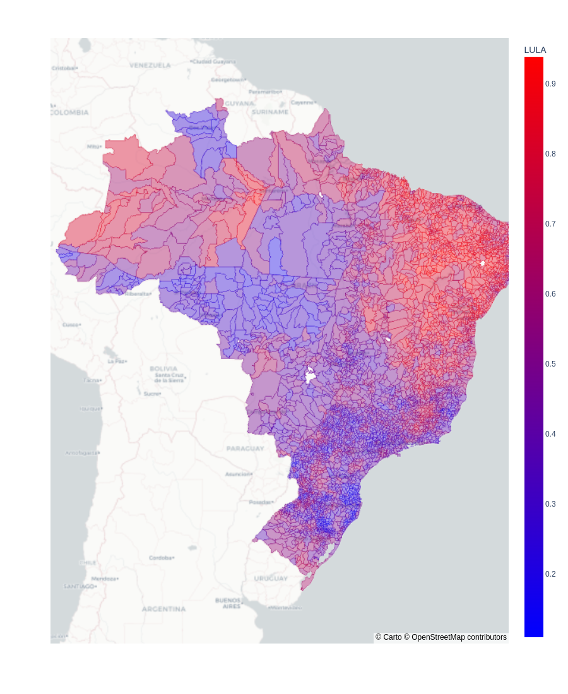

O Nordeste é vermelho, Sul e Sudeste nem tão azuis assim.
Resultado eleição presidencial no segundo turno por município
Embora seja uma eleição majoritária, é interessante identificar a preferência em cada localidade.
Temos rotulado regiões e estados como mais Bolsonaristas ou Lulistas,
mas será que toda cidade nestes estados merece a alcunha?
- No Nordeste, Lula venceu em todos os estados. Em estados como PB, PI, SE, e CE, 100% dos municípios foram favoráveis a Lula. E em outros como BA, PE, RN, MA, AM, mais de 90% dos municípios.
- Dos estados mais Bolsonaristas, RO foi unânime. Enquanto apenas RR e SC tem acima de 90% dos muncípios pró Bolsonaro. Nos demais estados, não é tão homogênea a posição dos municípios. Estados de MG, PR, e RS, contam com 66%, 28%, e 25% de cidades pró Lula, respectivamente.
Mapa e gráfico interativos
Mapa do Brasil destadcando o resultado por municipio (sem background)
Quantidade de municípios a favor de cada candidato por estado

Mapa do Brasil destadcando o resultado por municipio (com o mapa em background)
